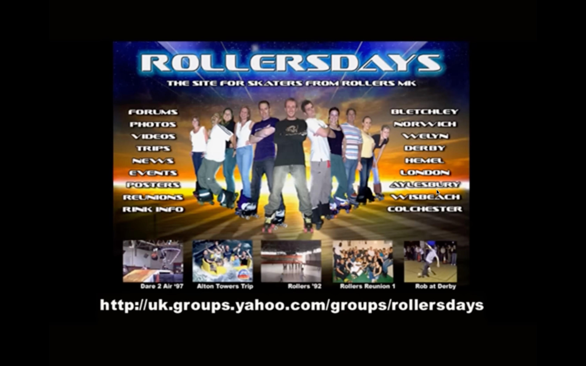

List twenty things you enjoy doing (rock climbing, roller-skating, baking pies, making soup, making love, making love again, riding a bike, riding a horse, playing catch, shooting baskets, going for a run, reading poetry, and so forth). When was the last time you let yourself do these things? Next to each entry, place a date. Don’t be surprised if it’s been years for some of your favorites. That will change. This list is an excellent resource for artist dates.
Cameron, Julia. The Artist's Way (pp. 56-57). Penguin Publishing Group.
understanding the roots... these three diverging styles of roller skating
| Jam Skating | Roller Derby | Outdoor Skating |
|---|